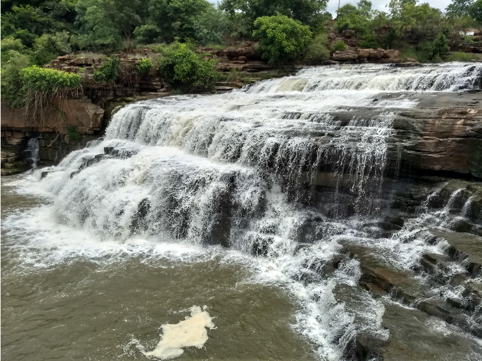
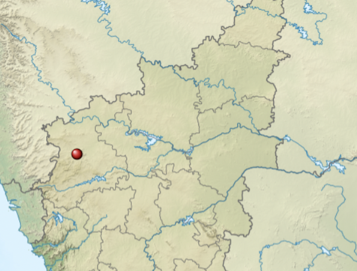
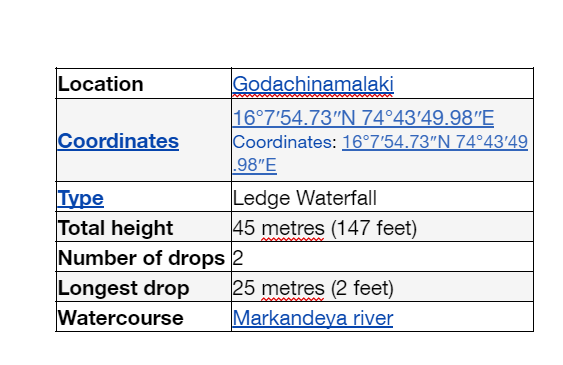

Godachinmalki Falls in Godachinamalaki village is a waterfall located on Markandeya river in Belgaum district, Gokak Taluk, Karnataka, India. It is 15 kilometers away from Gokak and 40 kilometers from Belgaum. It is located in a deep green valley.

More about the falls
Godachinmalki falls, also known as Markandeya falls, is located in a rugged valley, which is approachable from Godachinamalaki village by walking as well as by vehicle through an irregular forest route for about 2 kilometers and there are two routes to reach the falls from Godachinamalki, one is vai Malebail road by crossing bridge at godachinamalki and another one is vai Gurusiddeshwar Temple(Hatti Siddeshwar). It can also be reached from Nirvaneshwara Matha near Yogikolla, only by foot.
To reach Godachinamalki Falls from Belgaum vai Ankalagi, Pachhapur & Mavanur, frequent bus facility is available from Belgaum & Gokak and nearest railway station is Pachhapur, which is about 8 kilometers and good train facility is available from Belgaum to Miraj, all most all trains stops in Pachhapur railway station .
There are actually two falls formed here. The Markandeya river takes a first fall from a height of about 25 metres and flows into a rocky valley. After a short distance from the rocky valley, it takes the second fall from a height of about 20 metres.
Within 10 km distance Gokak falls is located from Godachinamalki vai Melmanahatti & Maradimath.
Later Markandeya river joins Ghataprabha River near Gokak.
Within a 6 km radius there are two dams; one built across Ghataprabha River (Hidkal dam) and another one (Shirur Dam) across Markandeya river.


Highlights of the Falls:
Breathtaking view: The large open valley, mist forming by roaring waterfall makes Godachinamalki a visual treat
Trekking opportunity: Though accessible by road, trekking the last few kilometres from Godachinamalki village till the falls is a popular activity.